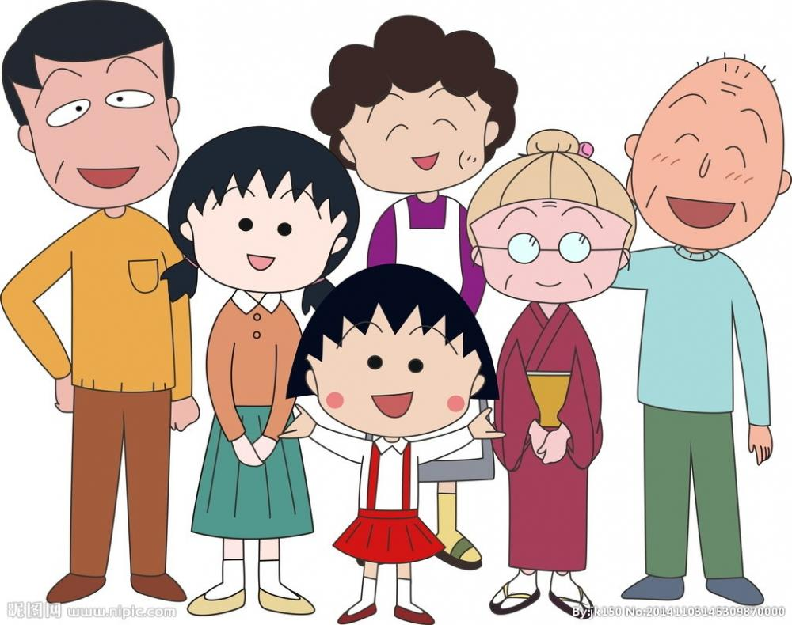
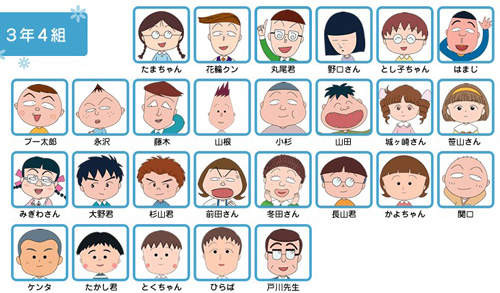
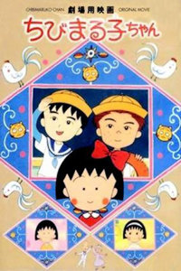

櫻桃小丸子
如果一直沉浸在自己的頹廢中，那是絕對不可能成功的，所以振作起來，打起精神 : )
#櫻桃小丸子經典語錄
1965年，5月8日出生於靜岡縣清水市(現在靜岡市清水區)。
1984年，正式成為漫畫家。
1986年，《櫻桃小丸子》在少女漫畫雜志《蝴蝶結》上首次亮相。
1989年，以同名作品獲得第十三屆講談社漫畫獎。 《櫻桃小丸子》漫畫系列在日本總計銷售超過了三千萬本。
櫻桃子同時推出了各種有關小丸子及其他人物的小品文、漫畫集、電視動畫等，大受好評。
動畫故事大綱
本作品是以作者櫻桃子的童年（昭和49年，即1974年）生活為1970年代故事，主角的姓名也是與作者同名。故事背景是在日本靜岡縣清水市，其中一事一物均充滿著1970年代的懷舊氣息。故事發生的舞台是日本靜岡縣清水市（從2005年起成為靜岡縣靜岡市清水區），那是一個不折不扣的美麗港都，是個交通便利、漁產豐富、又與富士山為鄰的好地方。 故事圍繞著小丸子以及其家人和同學展開，有關於親情、友誼等，或是一些生活小事，但當中有笑有淚，令人回想起童年的稚氣。
櫻桃小丸子家族照

三年四班人物介紹

劇場版
友情歲月（ちびまる子ちゃん 大野君と杉山君）

1990年12月15日公開1965年
劇情介紹:
正在上小學三年級的櫻桃小丸子，因班長丸尾末夫提出了抽簽換座位的要求，抽到了她不喜歡的調皮同學大野健壹跟彬山聰同桌。而且和最好的同學小玉分了桌。 大野和彬山是壹對好朋友，他們雖然總是抄襲作業欺負同學，可他們參加勞動時非常能幹，學校有活動配合的也很默契。學校要開運動會，小丸子和上六年級的姐姐櫻杏子(水谷優子 配音)都要參加，在運動會開始時爸爸櫻宏誌媽媽小林堇也來給她們加油，小丸子參加的借物竟賽時多虧大野和杉山的幫助取得了第二名。男生騎馬打仗比賽，因大野沒發揮好以至最後輸了比賽，大野和彬山這對最要好的朋友因此友誼出現了裂痕。
賭氣不說話的兩人，轉眼來到了平安夜的合唱比賽。一場大野的危機即將降臨，這是否是二人關係的轉捩點呢
我最喜歡的歌（ちびまる子ちゃん わたしの好きな歌）

1992年12月19日公開
劇情介紹:
小丸子在靜岡的街道上認識了一個畫畫的姐姐，她名叫佐藤靜子。小丸子和靜子成了好朋友，時不時去靜子家做客。
在音樂課上，小丸子喜歡上一首名叫《小馬之歌》的曲子。 她想用畫筆把這首歌描繪下來，而靜子也決定以這首歌為主題畫一幅畫，作為自己新的參賽作品。
不久，靜子打算和戀人結婚，她將跟隨丈夫回到北海道。 靜子的這一決定令小丸子十分傷心。和靜子相識相知的點點滴滴，將成為小丸子最珍貴的回憶。
來自義大利的少年(ちびまる子ちゃん イタリアから來た少年）

2015年12月23日公開
劇情介紹:
來自世界五大國家的六位小留學生，在花輪建議之下，來到日本體驗寄宿生活，並在小丸子的班上引發轟動！
來自義大利的少年安德烈，選擇到小丸子家中寄宿。而這群小留學生們，一方面跟小丸子及同學們一起學習，一方面離開清水鎮，到大阪或京都觀光，玩得不亦樂乎。
雖然小丸子對積極向她示好的安德烈感到困惑，但在了解他來到日本的原因之後，才明白他不為人知的心意。他們一起參加夏日祭典，各自許下希望再相見的心願。然而快樂的時光總是短暫，離別的時刻終於到來…